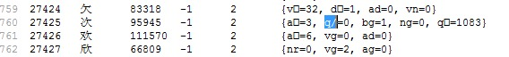

HanLP开源分词系统
支持中文分词（N-最 短路分词、CRF分词、索引分词、用户自定义词典、词性标注），命名实体识别（中国人名、音译人名、日本人名、地名、实体机构名识别），关键词提取，自动 摘要，短语提取，拼音转换，简繁转换，文本推荐，依存句法分析（MaxEnt依存句法分析、CRF依存句法分析）。提供Lucene插件，兼容 Lucene4.x。
HanLP开源分词系统下载地址：http://www.hankcs.com/nlp/hanlp.html
其他开源分词系统
我发现几个民间的分词项目的词典很乱，ansj分词的作者承认arrays.dic是从结巴分词抄过来的，结巴的作者说词典是98年人民日报+ictclas切割小说统计出来的，那么可以推断这两个分词的标注集应该和ictclas是一样的。
按照ictclas的官方说法，其采用的标注集是ICTPOS3.0词性标记集，如下表所示：
n 名词
nr 人名
nr1 汉语姓氏
nr2 汉语名字
nrj 日语人名
nrf 音译人名
ns 地名
nsf 音译地名
nt 机构团体名
nz 其它专名
nl 名词性惯用语
ng 名词性语素
t 时间词
tg 时间词性语素
s 处所词
f 方位词
v 动词
vd 副动词
vn 名动词
vshi 动词“是”
vyou 动词“有”
vf 趋向动词
vx 形式动词
vi 不及物动词（内动词）
vl 动词性惯用语
vg 动词性语素
a 形容词
ad 副形词
an 名形词
ag 形容词性语素
al 形容词性惯用语
b 区别词
bl 区别词性惯用语
z 状态词
r 代词
rr 人称代词
rz 指示代词
rzt 时间指示代词
rzs 处所指示代词
rzv 谓词性指示代词
ry 疑问代词
ryt 时间疑问代词
rys 处所疑问代词
ryv 谓词性疑问代词
rg 代词性语素
m 数词
mq 数量词
q 量词
qv 动量词
qt 时量词
d 副词
p 介词
pba 介词“把”
pbei 介词“被”
c 连词
cc 并列连词
u 助词
uzhe 着
ule 了 喽
uguo 过
ude1 的 底
ude2 地
ude3 得
usuo 所
udeng 等 等等 云云
uyy 一样 一般 似的 般
udh 的话
uls 来讲 来说 而言 说来
uzhi 之
ulian 连 （“连小学生都会”）
e 叹词
y 语气词(delete yg)
o 拟声词
h 前缀
k 后缀
x 字符串
xx 非语素字
xu 网址URL
w 标点符号
wkz 左括号，全角：（ 〔 ［ ｛ 《 【 〖 〈 半角：( [ { <
wky 右括号，全角：） 〕 ］ ｝ 》 】 〗 〉 半角： ) ] { >
wyz 左引号，全角：“ ‘ 『
wyy 右引号，全角：” ’ 』
wj 句号，全角：。
ww 问号，全角：？ 半角：?
wt 叹号，全角：！ 半角：!
wd 逗号，全角：， 半角：,
wf 分号，全角：； 半角： ;
wn 顿号，全角：、
wm 冒号，全角：： 半角： :
ws 省略号，全角：…… …
wp 破折号，全角：—— －－ ——－ 半角：--- ----
wb 百分号千分号，全角：％ ‰ 半角：%
wh 单位符号，全角：￥ ＄ ￡ ° ℃ 半角：$
而ansj的文档给出的却是一份北大的标注集，
实际上ansj的词典中含有很多奇怪的词性，我对其array.dic中的词性进行统计，发现一共出现了如下54种：
[, nt, ns, nr, tg, nz, nx, q/, bg, zg, vg, rg, vn, dg, uz, uv, mg, vd, f, yg, g, uj, d, e, ul, b, c, ug, a, n, o, l, qg, m, j, k, h, i, w, v, u, t, s, r, q, an, p, ng, ad, ud, ag, z, y, x]
事实上，除掉一个空格，还有53种，其中的mg不属于ICTPOS3.0词性标记集，也不属于北大标注集，让我很疑惑。其中q/更是让人哭笑不得，应该是对方词典有错误。

后来一番搜索，发现了一份看样子匹配度比较高的标注集，可能是新版的北大标注集：
《现代汉语语料库加工规范——词语切分与词性标注》词性标记
|
代码名称 |
帮助记忆的诠释 |
例子 及 注解 |
|
|
1 |
Ag 形语素 |
形容词性语素。形容词代码为a，语素代码ｇ前面置以A。 |
绿色/n 似/d 锦/Ag ， |
|
2 |
a 形容词 |
取英语形容词adjective的第1个字母 |
[重要/a 步伐/n]NP ， 美丽/a ， 看似/v 抽象/a ， |
|
3 |
ad 副形词 |
直接作状语的形容词。形容词代码a和副词代码d并在一起。 |
[积极/ad 谋求/v]V-ZZ ， 幻象/n 易/ad 逝/Vg ， |
|
4 |
an 名形词 |
具有名词功能的形容词。形容词代码a和名词代码n并在一起。 |
[外交/n 和/c 安全/an]NP-BL ， |
|
5 |
Bg 区别语素 |
区别词性语素。区别词代码为b，语素代码ｇ前面置以B。 |
赤/Ag 橙/Bg 黄/a 绿/a 青/a 蓝/a 紫/a ， |
|
6 |
b 区别词 |
取汉字“别”的声母。 |
女/b 司机/n， 金/b 手镯/n， 慢性/b 胃炎/n， 古/b 钱币/n, 副/b 主任/n， 总/b 公司/n 单音节区别词和单音节名词或名语素组合，作为一个词，并标以名词词性n。 雄鸡/n， 雌象/n， 女魔/n， 古币/n 少数“单音节区别词+双音节词”的结构作为一个词。 总书记/n ， |
|
7 |
c 连词 |
取英语连词conjunction的第1个字母。 |
合作/vn 与/c 伙伴/n |
|
8 |
Dg 副语素 |
副词性语素。副词代码为d，语素代码ｇ前面置以D。 |
了解/v 甚/Dg 深/a ， 煞/Dg 是/v 喜人/a ， |
|
9 |
d 副词 |
取adverb的第2个字母，因其第1个字母已用于形容词。 |
进一步/d 发展/v ， |
|
10 |
e 叹词 |
取英语叹词exclamation的第1个字母。 |
啊/e ，/w 那/r 金灿灿/z 的/u 麦穗/n ， |
|
11 |
f 方位词 |
取汉字“方”。 |
军人/n 的/u 眼睛/n 里/f 不/d 是/v 没有/v 风景/n ， |
|
12 |
h 前接成分 |
取英语head的第1个字母。 |
许多/m 非/h 主角/n 人物/n , 办事处/n 的/u “/w 准/h 政府/n ”/w 功能/n 不断/d 加强/v , |
|
13 |
i 成语 |
取英语成语idiom的第1个字母。 |
一言一行/i , 义无反顾/i , |
|
14 |
j 简称略语 |
取汉字“简”的声母。 |
[德/j 外长/n]NP , 文教/j , |
|
15 |
k |
后接成分。 |
少年儿童/l 朋友/n 们/k , 身体/n 健康/a 者/k , |
|
16 |
l 习用语 |
习用语尚未成为成语，有点“临时性”，取“临”的声母。 |
少年儿童/l 朋友/n 们/k , 落到实处/l , |
|
17 |
Mg 数语素 |
数词性语素。数词代码为m，语素代码ｇ前面置以M。 |
甲/Mg 减下/v 的/u 人/n 让/v 乙/Mg 背上/v , 凡/d “/w 寅/Mg 年/n ”/w 中/f 出生/v 的/u 人/n 生肖/n 都/d 属/v 虎/n , |
|
18 |
m 数词 |
取英语numeral的第3个字母，n，u已有他用。 |
1．数量词组应切分为数词和量 词。 三/m 个/q, 10/m 公斤/q, 一/m 盒/q 点心/n , 但少数数量词已是词典的登录单位，则不再切分。 一个/m , 一些/m , 2. 基数、序数、小数、分数、百分数一律不予切分，为一个切分单位，标注为 m 。 一百二十三/m，20万/m， 123.54/m, 一个/m, 第一/m， 第三十五/m， 20%/m， 三分之二/m， 千分之三十/m, 几十/m 人/n， 十几万/m 元/q， 第一百零一/m 个/q , 3. 约数，前加副词、形容词或后加“来、多、左右”等助数词的应予分开。 约/d 一百/m 多/m 万/m，仅/d 一百/m 个/q， 四十/m 来/m 个/q，二十/m 余/m 只/q， 十几/m 个/q，三十/m 左右/m ， 两个数词相连的及“成百”、“上千”等则不予切分。 五六/m 年/q， 七八/m 天/q，十七八/m 岁/q， 成百/m 学生/n，上千/m 人/n， 4．表序关系的“数＋名”结构，应予切分。 二/m 连/n ， 三/m 部/n , |
|
19 |
Ng 名语素 |
名词性语素。名词代码为n，语素代码ｇ前面置以N。 |
出/v 过/u 两/m 天/q 差/Ng, 理/v 了/u 一/m 次/q 发/Ng,
|
|
20 |
n 名词 |
取英语名词noun的第1个字母。 |
（参见 动词–v） 岗位/n , 城市/n , 机会/n , 她/r 是/v 责任/n 编辑/n ,
|
|
21 |
nr 人名 |
名词代码n和“人(ren)”的声母并在一起。 |
1. 汉族人及与汉族起名方式相同的非汉族人的姓和名单独切分，并分别标注为nr。 张/nr 仁伟/nr， 欧阳/nr 修/nr， 阮/nr 志雄/nr， 朴/nr 贞爱/nr 汉族人除有单姓和复姓外，还有双姓，即有的女子出嫁后，在原来的姓上加上丈夫的姓。如：陈方安生。这种情况切分、标注为：陈/nr 方/nr 安生/nr；唐姜氏，切分、标注为：唐/nr 姜氏/nr。 2. 姓名后的职务、职称或称呼要分开。 江/nr 主席/n， 小平/nr 同志/n， 江/nr 总书记/n，张/nr 教授/n， 王/nr 部长/n， 陈/nr 老总 /n， 李/nr 大娘/n， 刘/nr 阿姨/n， 龙/nr 姑姑/n 3. 对人的简称、尊称等若为两个字，则合为一个切分单位，并标以nr。 老张/nr， 大李/nr， 小郝/nr, 郭老/nr， 陈总/nr 4. 明显带排行的亲属称谓要切分开，分不清楚的则不切开。 三/m 哥/n， 大婶/n， 大/a 女儿/n， 大哥/n, 小弟/n, 老爸/n 5. 一些著名作者的或不易区分姓和名的笔名通常作为一个切分单位。 鲁迅/nr， 茅盾/nr， 巴金/nr， 三毛/nr， 琼瑶/nr， 白桦/nr 6. 外国人或少数民族的译名（包括日本人的姓名）不予切分，标注为nr。 克林顿/nr， 叶利钦/nr， 才旦卓玛/nr， 小林多喜二/nr， 北研二/nr, 华盛顿/nr， 爱因斯坦/nr 有些西方人的姓名中有小圆点，也不分开。 卡尔·马克思/nr
|
|
22 |
ns 地名 |
名词代码n和处所词代码s并在一起。 |
（参见2。短语标记说明–NS） 安徽/ns，深圳/ns，杭州/ns，拉萨/ns，哈尔滨/ns， 呼和浩特/ns， 乌鲁木齐/ns，长江/ns，黄海/ns，太平洋/ns， 泰山/ns， 华山/ns，亚洲/ns, 海南岛/ns，太湖/ns，白洋淀/ns, 俄罗斯/ns，哈萨克斯坦/ns，彼得堡/ns， 伏尔加格勒/ns
1. 国名不论长短，作为一个切分单位。 中国/ns， 中华人民共和国/ns， 日本国/ns， 美利坚合众国/ns， 美国/ns 2. 地名后有“省”、“市”、“县”、“区”、“乡”、“镇”、“村”、“旗”、“州”、“都”、“府”、“道”等单字的行政区划名称时，不切分开，作为一个切分单位。 四川省/ns， 天津市/ns，景德镇/ns沙市市/ns， 牡丹江市/ns，正定县/ns，海淀区/ns, 通州区/ns，东升乡/ns， 双桥镇/ns 南化村/ns，华盛顿州/ns，俄亥俄州/ns，东京都/ns， 大阪府/ns，北海道/ns， 长野县/ns，开封府/ns，宣城县/ns 3. 地名后的行政区划有两个以上的汉字，则将地名同行政区划名称切开，不过要将地名同行政区划名称用方括号括起来，并标以短语NS。 [芜湖/ns 专区/n] NS， [宣城/ns 地区/n]ns， [内蒙古/ns 自治区/n]NS， [深圳/ns 特区/n]NS， [厦门/ns 经济/n 特区/n]NS， [香港/ns 特别/a 行政区/n]NS， [香港/ns 特区/n]NS， [华盛顿/ns 特区/n]NS, 4. 地名后有表示地形地貌的一个字的普通名词，如“江、河、山、洋、海、岛、峰、湖”等，不予切分。 鸭绿江/ns，亚马逊河/ns, 喜马拉雅山/ns, 珠穆朗玛峰/ns，地中海/ns，大西洋/ns，洞庭湖/ns， 塞普路斯岛/ns 5. 地名后接的表示地形地貌的普通名词若有两个以上汉字，则应切开。然后将地名同该普通名词标成短语NS。 [台湾/ns 海峡/n]NS，[华北/ns 平原/n]NS，[帕米尔/ns 高原/n]NS， [南沙/ns 群岛/n]NS，[京东/ns 大/a 峡谷/n]NS [横断/b 山脉/n]NS 6．地名后有表示自然区划的一个字的普通名词，如“ 街，路，道，巷，里，町，庄，村，弄，堡”等，不予切分。 中关村/ns，长安街/ns，学院路/ns， 景德镇/ns, 吴家堡/ns, 庞各庄/ns， 三元里/ns，彼得堡/ns, 北菜市巷/ns, 7．地名后接的表示自然区划的普通名词若有两个以上汉字，则应切开。然后将地名同自然区划名词标成短语NS。 [米市/ns 大街/n]NS, [蒋家/nz 胡同/n]NS , [陶然亭/ns 公园/n]NS , 8． 大小地名相连时的标注方式为： 北京市/ns 海淀区/ns 海淀镇/ns [南/f 大街/n]NS [蒋家/nz 胡同/n]NS 24/m 号/q , |
|
23 |
nt 机构团体 |
“团”的声母为t，名词代码n和t并在一起。 |
（参见2。短语标记说明–NT） 联合国/nt，中共中央/nt，国务院/nt， 北京大学/nt 1．大多数团体、机构、组织的专有名称一般是短语型的，较长，且含有地名或人名等专名，再组合，标注为短语NT。 [中国/ns 计算机/n 学会/n]NT， [香港/ns 钟表业/n 总会/n]NT, [烟台/ns 大学/n]NT, [香港/ns 理工大学/n]NT, [华东/ns 理工大学/n]NT, [合肥/ns 师范/n 学院/n]NT， [北京/ns 图书馆/n]NT, [富士通/nz 株式会社/n]NT, [香山/ns 植物园/n]NT, [安娜/nz 美容院/n]NT， [上海/ns 手表/n 厂/n]NT， [永和/nz 烧饼铺/n]NT， [北京/ns 国安/nz 队/n]NT, 2. 对于在国际或中国范围内的知名的唯一的团体、机构、组织的名称即使前面没有专名，也标为nt或NT。 联合国/nt,国务院/nt，外交部/nt， 财政部/nt，教育部/nt, 国防部/nt， [世界/n 贸易/n 组织/n]NT， [国家/n 教育/vn 委员会/n]NT， [信息/n 产业/n 部/n]NT， [全国/n 信息/n 技术/n 标准化/vn 委员会/n]NT， [全国/n 总/b 工会/n]NT， [全国/n 人民/n 代表/n 大会/n]NT， 美国的“国务院”，其他国家的“外交部、财政部、教育部”，必须在其所属国的国名之后出现时，才联合标注为NT。 [美国/ns 国务院/n]NT， [法国/ns 外交部/n]NT， [美/j 国会/n]NT， 日本有些政府机构名称很特别，无论是否出现在“日本”国名之后都标为nt。 [日本/ns 外务省/nt]NT， [日/j 通产省/nt]NT 通产省/nt 3. 前后相连有上下位关系的团体机构组织名称的处理方式如下: [联合国/nt 教科文/j 组织/n]NT， [中国/ns 银行/n 北京/ns 分行/n]NT， [河北省/ns 正定县/ns 西平乐乡/ns 南化村/ns 党支部/n]NT， 当下位名称含有专名（如“北京/ns 分行/n”、“南化村/ns 党支部/n”、“昌平/ns 分校/n”）时，也可脱离前面的上位名称单独标注为NT。 [中国/ns 银行/n]NT [北京/ns 分行/n]NT， 北京大学/nt [昌平/ns 分校/n]NT，4. 团体、机构、组织名称中用圆括号加注简称时: [宝山/ns 钢铁/n （/w 宝钢/j ）/w 总/b 公司/n]NT， [宝山/ns 钢铁/n 总/b 公司/n]NT，（/w 宝钢/j ）/w
|
|
24 |
nx 外文字符 |
外文字符。 |
A/nx 公司/n ，B/nx 先生/n ，X/nx 君/Ng , 24/m K/nx 镀金/n , C/nx 是/v 光速/n , Windows98/nx , PentiumIV/nx , I LOVE THIS GAME/nx , |
|
25 |
nz 其他专名 。 |
“专”的声母的第1个字母为z，名词代码n和z并在一起。 |
（参见2。短语标记说明–NZ） 除人名、国名、地名、团体、机构、组织以外的其他专有名词都标以nz。 满族/nz，俄罗斯族/nz，汉语/nz，罗马利亚语/nz， 捷克语/nz，中文/nz, 英文/nz， 满人/nz， 哈萨克人/nz， 诺贝尔奖/nz， 茅盾奖/nz, 1.包含专有名称（或简称）的交通线，标以nz；短语型的，标为NZ。 津浦路/nz， 石太线/nz， [京/j 九/j 铁路/n]NZ, [京/j 津/j 高速/b 公路/n]NZ， 2. 历史上重要事件、运动等专有名称一般是短语型的，按短语型专有名称处理，标以NZ。 [卢沟桥/ns 事件/n]NZ, [西安/ns 事变/n]NZ，[五四/t 运动/n]NZ, [明治/nz 维新/n]NZ，[甲午/t 战争/n]NZ, 3.专有名称后接多音节的名词，如“语言”、“文学”、“文化”、“方式”、“精神”等，失去专指性，则应分开。 欧洲/ns 语言/n， 法国/ns 文学/n， 西方/ns 文化/n， 贝多芬/nr 交响乐/n, 雷锋/nr 精神/n, 美国/ns 方式/n，日本/ns 料理/n， 宋朝/t 古董/n 4. 商标（包括专名及后接的“牌”、“型”等）是专指的，标以nz，但其后所接的商品仍标以普通名词n。 康师傅/nr 方便面/n, 中华牌/nz 香烟/n, 牡丹III型/nz 电视机/n, 联想/nz 电脑/n, 鳄鱼/nz 衬衣/n， 耐克/nz 鞋/n 5. 以序号命名的名称一般不认为是专有名称。 2/m 号/q 国道/n ，十一/m 届/q 三中全会/j 如果前面有专名，合起来作为短语型专名。 [中国/ns 101/m 国道/n]NZ, [中共/j 十一/m 届/q 三中全会/j]NZ, 6. 书、报、杂志、文档、报告、协议、合同等的名称通常有书名号加以标识，不作为专有名词。由于这些名字往往较长，名字本身按常规处理。 《/w 宁波/ns 日报/n 》/w ，《/w 鲁迅/nr 全集/n 》/w, 中华/nz 读书/vn 报/n, 杜甫/nr 诗选/n， 少数书名、报刊名等专有名称，则不切分。红楼梦/nz， 人民日报/nz，儒林外史/nz 7. 当有些专名无法分辨它们是人名还是地名或机构名时，暂标以nz。 [巴黎/ns 贝尔希/nz 体育馆/n]NT, 其中“贝尔希”只好暂标为nz。
|
|
26 |
o 拟声词 |
取英语拟声词onomatopoeia的第1个字母。 |
哈哈/o 一/m 笑/v , 装载机/n 隆隆/o 推进/v , |
|
27 |
p 介词 |
取英语介词prepositional的第1个字母。 |
对/p 子孙后代/n 负责/v , 以/p 煤/n 养/v 农/Ng , 为/p 治理/v 荒山/n 服务/v , 把/p 青年/n 推/v 上/v 了/u 领导/vn 岗位/n , |
|
28 |
q 量词 |
取英语quantity的第1个字母。 |
（参见数词m） 首/m 批/q , 一/m 年/q , |
|
29 |
Rg 代语素 |
代词性语素。代词代码为r,在语素的代码g前面置以R。 |
读者/n 就/d 是/v 这/r 两/m 棵/q 小树/n 扎根/v 于/p 斯/Rg 、/w 成长/v 于/p 斯/Rg 的/u 肥田/n 沃土/n , |
|
30 |
r 代词 |
取英语代词pronoun的第2个字母,因p已用于介词。 |
单音节代词“本”、“每”、“各”、“诸”后接单音节名词时，和后接的单音节名词合为代词；当后接双音节名词时，应予切分。 本报/r， 每人/r， 本社/r， 本/r 地区/n， 各/r 部门/n
|
|
31 |
s 处所词 |
取英语space的第1个字母。 |
家里/s 的/u 电脑/n 都/d 联通/v 了/u 国际/n 互联网/n , 西部/s 交通/n 咽喉/n , |
|
32 |
Tg 时语素 |
时间词性语素。时间词代码为t,在语素的代码g前面置以T。 |
３日/t 晚/Tg 在/p 总统府/n 发表/v 声明/n , 尊重/v 现/Tg 执政/vn 当局/n 的/u 权威/n , |
|
33 |
t 时间词 |
取英语time的第1个字母。 |
1. 年月日时分秒，按年、月、日、时、分、秒切分，标注为t 。 1997年/t 3月/t 19日/t 下午/t 2时/t 18分/t 若数字后无表示时间的“年、月、日、时、分、秒”等的标为数词m。 1998/m 中文/n 信息/n 处理/vn 国际/n 会议/n 2. 历史朝代的名称虽然有专有名词的性质，仍标注为t。 西周/t， 秦朝/t， 东汉/t， 南北朝/t， 清代/t “牛年、虎年”等一律不予切分，标注为： 牛年/t, 虎年/t, 甲午年/t， 甲午/t 战争/n， 庚子/t 赔款/n, 戊戌/t 变法/n |
|
34 |
u 助词 |
取英语助词auxiliary。 |
[[俄罗斯/ns 和/c 北约/j]NP-BL 之间/f [战略/n 伙伴/n 关系/n]NP 的/u 建立/vn]NP 填平/v 了/u [[欧洲/ns 安全/a 政治/n]NP 的/u 鸿沟/n]NP |
|
35 |
Vg 动语素 |
动词性语素。动词代码为v。在语素的代码g前面置以V。 |
洗/v 了/u 一个/m 舒舒服服/z 的/u 澡/Vg
|
|
36 |
v 动词 |
取英语动词verb的第一个字母。 |
（参见 名词–n） [[[欧盟/j 扩大/v]S 的/u [历史性/n 决定/n]NP]NP 和/c [北约/j 开放/v]S]NP-BL [为/p [创建/v [一/m 种/q 新/a 的/u 欧洲/ns 安全/a 格局/n]NP]VP-SBI]PP-MD [奠定/v 了/u 基础/n]V-SBI , ,
|
|
37 |
vd 副动词 |
直接作状语的动词。动词和副词的代码并在一起。 |
形势/n 会/v 持续/vd 好转/v , 认为/v 是/v 电话局/n 收/v 错/vd 了/u 费/n , |
|
38 |
vn 名动词 |
指具有名词功能的动词。动词和名词的代码并在一起。 |
引起/v 人们/n 的/u 关注/vn 和/c 思考/vn , 收费/vn 电话/n 的/u 号码/n , |
|
39 |
w 标点符号 |
”/w ：/w |
|
|
40 |
x 非语素字 |
非语素字只是一个符号，字母x通常用于代表未知数、符号。 |
|
|
41 |
Yg 语气语素 |
语气词性语素。语气词代码为y。在语素的代码g前面置以Y。 |
唯/d 大力/d 者/k 能/v 致/v 之/u 耳/Yg |
|
42 |
y 语气词 |
取汉字“语”的声母。 |
会/v 泄露/v 用户/n 隐私/n 吗/y , 又/d 何在/v 呢/y ？ |
|
43 |
z 状态词 |
取汉字“状”的声母的前一个字母。 |
取得/v 扎扎实实/z 的/u 突破性/n 进展/vn , 四季/n 常青/z 的/u 热带/n 树木/n , 短短/z 几/m 年/q 间, |
好像没有写你用的是哪一种标注集？
楼主牛逼淫
你好，楼主， 请问命名实体的语料库有推荐或者分享吗？ 感谢！
这个不错